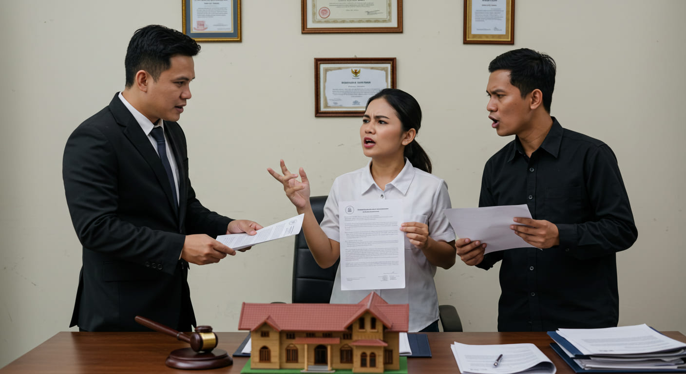

5 Masalah Umum dalam Perceraian yang Harus Dihadapi dengan Pengacara

Perceraian bukan hanya soal berpisah, tetapi juga menyelesaikan berbagai aspek hukum yang menyertainya. Banyak orang mengalami kesulitan karena tidak mengetahui bagaimana cara menyelesaikan masalah yang muncul dalam perceraian. Tanpa pendampingan pengacara, berbagai aspek seperti hak asuh anak, pembagian harta, dan tuntutan nafkah bisa menjadi konflik yang berkepanjangan dan sulit diselesaikan secara adil.
Dengan memahami masalah umum dalam perceraian dan bagaimana peran pengacara, Anda bisa menghadapi proses ini dengan lebih siap dan terarah. Berikut adalah lima masalah utama yang sering terjadi dalam perceraian dan bagaimana pengacara dapat membantu. (Baca lebih lanjut di sini)
5 Masalah Umum dalam Perceraian
1. Hak Asuh Anak
Salah satu masalah terbesar dalam perceraian adalah hak asuh anak. Jika tidak ditangani dengan baik, ini bisa berujung pada perebutan hak asuh yang berkepanjangan dan merugikan anak secara emosional. Pengadilan akan mempertimbangkan berbagai faktor seperti kedekatan anak dengan orang tua, stabilitas finansial, dan lingkungan yang mendukung perkembangan anak.
Pengacara akan membantu dalam menyusun dokumen, memberikan bukti, serta memastikan hak asuh diberikan sesuai kepentingan terbaik anak. Dengan strategi hukum yang tepat, pengacara dapat membantu Anda mendapatkan hak asuh atau setidaknya hak kunjungan yang adil. (Pelajari lebih lanjut di Fauzan Taufik)
2. Pembagian Harta Gono-gini
Harta yang diperoleh selama pernikahan harus dibagi secara adil sesuai hukum. Sayangnya, tidak semua pasangan dapat mencapai kesepakatan mengenai pembagian aset ini, sehingga konflik sering terjadi. Masalah utama yang muncul adalah:
Apakah semua aset harus dibagi 50:50?
Bagaimana dengan aset yang dimiliki sebelum pernikahan?
Apakah hutang pernikahan juga harus dibagi?
Pengacara akan memastikan bahwa Anda mendapatkan bagian yang seharusnya sesuai hukum yang berlaku dan membantu menyusun strategi terbaik agar tidak mengalami kerugian. Mereka juga dapat membantu negosiasi jika ada perjanjian pranikah yang harus dipertimbangkan.
3. Tuntutan Nafkah
Dalam beberapa kasus, salah satu pihak berhak mendapatkan nafkah setelah perceraian, terutama jika salah satu pasangan tidak bekerja atau memiliki tanggungan anak kecil. Tuntutan nafkah bisa mencakup:
Nafkah istri setelah perceraian
Tunjangan anak untuk memastikan kebutuhan anak tetap terpenuhi
Pembayaran biaya pendidikan dan kesehatan anak
Pengacara akan membantu memastikan hak ini tidak diabaikan dan menyiapkan dokumen serta bukti pendukung agar pengadilan mengabulkan tuntutan yang diajukan.
4. Proses Perceraian yang Lama
Banyak orang ingin menyelesaikan perceraian dengan cepat, tetapi tanpa bantuan pengacara, proses bisa menjadi lebih panjang dan melelahkan. Faktor yang memperlambat proses perceraian antara lain:
Kesalahan dalam penyusunan dokumen gugatan cerai
Kurangnya bukti yang cukup untuk mendukung alasan perceraian
Mediasi yang tidak efektif dan berlarut-larut
Pengacara dapat mempercepat proses dengan memastikan semua dokumen sudah lengkap, menyusun gugatan cerai dengan baik, serta memberikan strategi hukum yang efektif agar perceraian dapat diproses dengan lebih cepat di pengadilan.
5. Perselisihan yang Tak Kunjung Selesai
Perceraian sering kali dipenuhi dengan emosi yang tinggi, membuat prosesnya menjadi penuh konflik. Beberapa pasangan terus-menerus bertengkar mengenai hal-hal kecil, seperti hak asuh anak, pembagian aset, atau bahkan alasan perceraian itu sendiri.
Pengacara dapat menjadi pihak netral yang membantu mengurangi ketegangan dan menyelesaikan permasalahan dengan pendekatan yang lebih objektif. Mereka juga dapat membantu pasangan mencapai kesepakatan tanpa harus melalui persidangan yang panjang dan melelahkan.
Kesimpulan
Setiap perceraian memiliki tantangan tersendiri, tetapi dengan pendampingan hukum yang tepat, Anda bisa melewatinya dengan lebih tenang dan adil. Dengan bantuan pengacara, Anda dapat memastikan bahwa hak-hak Anda tetap terlindungi, baik dalam hal hak asuh anak, pembagian harta, maupun tuntutan nafkah.
Jangan ragu untuk menghubungi kami melalui WhatsApp dan konsultasikan masalah Anda secara GRATIS. Dengan pendampingan pengacara yang tepat, Anda dapat menjalani proses perceraian dengan lebih tenang dan terjamin.